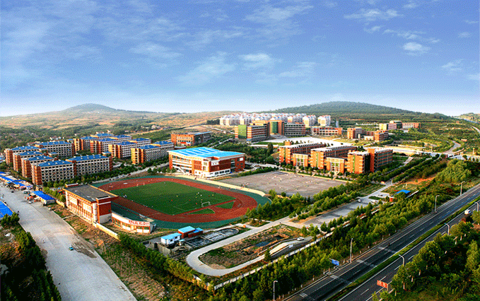

Welcome to Sydney Oasis School
Established in 1950, Sydney Oasis School has been providing quality education to students in the fields of Science, Technology, Engineering, and Mathematics (STEM). Our mission is to nurture the minds of young learners and prepare them for the challenges of the future.
Our dedicated teachers and staff strive to create a nurturing environment where students can thrive academically, socially, and emotionally. We offer a wide range of extracurricular activities and clubs to help students explore their interests and develop important life skills.
We invite you to explore our website and learn more about Sydney Oasis School, our students, and our commitment to excellence in education.